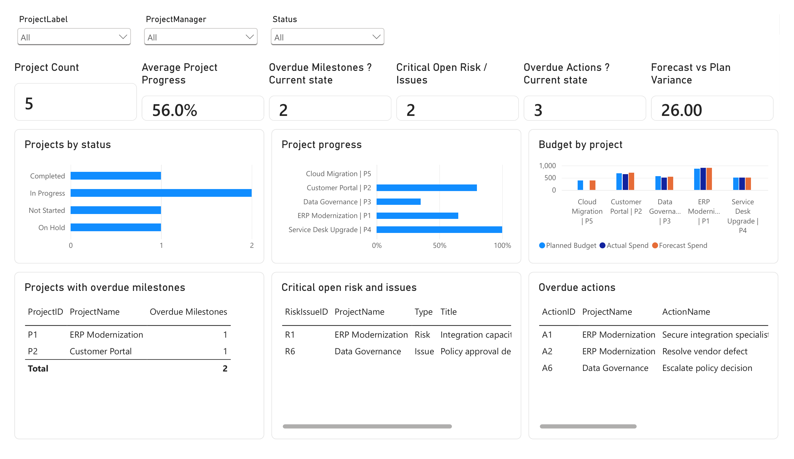

Ready-to-use analytics products.
Practical reporting products designed to help teams move from structured business data to clear decision-ready dashboards faster.
PMO Control Center for Power BI
Turn a simple Excel workbook into a clear executive view of projects, milestones, risks, actions and budget.

5 dashboard pages
Executive Overview, Portfolio, Milestones, Risks & Actions, and Budget.
Simple Excel input
Use the provided workbook structure and refresh the reusable Power BI template.
Built for PMO reporting
Track portfolio progress, milestones, risks, actions, spend and forecast variance.